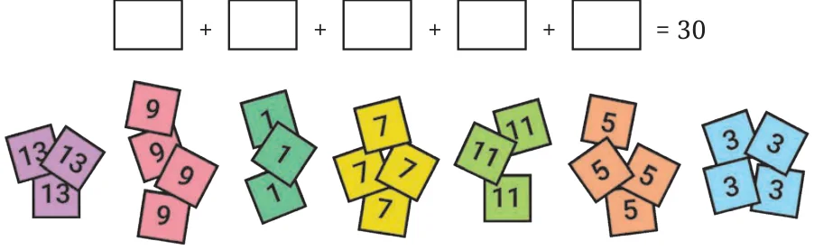
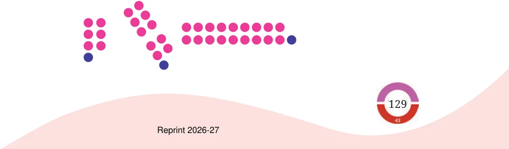
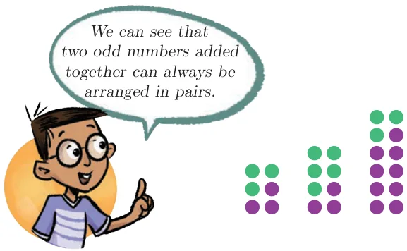

Kishor has some number cards and is working on a puzzle: There are 5 boxes, and each box should contain exactly 1 number card. The numbers in the boxes should sum to 30. Can you help him find a way to do it?

Can you figure out which 5 cards add to 30? Is it possible? There are many ways of choosing 5 cards from this collection. Is there a way to find a solution without checking all possibilities? Let us find out.
Add a few even numbers together. What kind of number do you get? Does it matter how many numbers are added? Any even number can be arranged in pairs without any leftovers. Some even numbers are shown here, arranged in pairs.
As we see in the figure, adding any number of even numbers will result in a number which can still be arranged in pairs without any leftovers. In other words, the sum will always be an even number.
Now, add a few odd numbers together. What kind of number do you get? Does it matter how many odd numbers are added? Odd numbers can not be arranged in pairs. An odd number is one more than a collection of pairs. Some odd numbers are shown below:

Can we also think of an odd number as one less than a collection of pairs?
This figure shows that the sum of two odd numbers must always be even! This along with the other figures here are more examples of a proof!

What about adding 3 odd numbers? Can the resulting sum be arranged in pairs? No.
Explore what happens to the sum of (a) 4 odd numbers, (b) 5 odd numbers, and (c) 6 odd numbers.
Let us go back to the puzzle Kishor was trying to solve. There are 5 empty boxes. That means he has an odd number of boxes. All the number cards contain odd numbers.
They should add to 30, which is an even number. Since, adding any 5 odd numbers will never result in an even number, Kishor cannot arrange these cards in the boxes to add up to 30.
Two siblings, Martin and Maria, were born exactly one year apart. Today they are celebrating their birthday. Maria exclaims that the sum of their ages is 112. Is this possible? Why or why not?
As they were born one year apart, their ages will be (two) consecutive numbers. Can their ages be 51 and 52? \(51 + 52 = 103\). Try some other consecutive numbers and see if their sum is 112.
The counting numbers 1, 2, 3, 4, 5, … alternate between even and odd numbers. In any two consecutive numbers, one will always be even and the other will always be odd!
What would be the resulting sum of an even number and an odd number? We can see that their sum can’t be arranged in pairs and thus will be an odd number.
Since 112 is an even number, and Martin’s and Maria’s ages are consecutive numbers, they cannot add up to 112.
We use the word parity to denote the property of being even or odd. For instance, the parity of the sum of any two consecutive numbers is odd. Similarly, the parity of the sum of any two odd numbers is even.